yaq
SciPy 2020
Kyle Sunden*
Blaise Thompson
John Wright
yaq
"yet another acquisition"
an instrument control framework:
- modular
- extensible
typical instrument

the yaq approach
demo
⬇️installation
client
running in background
$ pip install yaqd-core yaqd-system-monitor yaqd-control yaqc
$ yaqd edit-config system-monitor
$ yaqd-system-monitor
import yaqc
from pprint import pprint
sysmon = yaqc.Client(38202)
sysmon.traits
pprint(dir(sysmon))
help(sysmon.measure)
help(sysmon.get_measured)
sysmon.get_channel_names()
sysmon.get_channel_units()
sysmon.busy()
sysmon.measure(loop=True)
sysmon.get_measured()
sysmon.get_measured()
sysmon.get_measured()
sysmon.get_measured()
sysmon.busy()
$ yaqd enable system-monitor
$ yaqd start system-monitor
$ yaqd status
portability
- reusable daemons
- benefit from ecosystem
- use just what you need
- multilingual
- Simple text configuraton and state
traits
enforce consistency across interfaces......where possible
https://yaq.fyi/traits/
traits
has-position
- lightcon-topas4-motor
- micro-hr
- ne1000
- newport-smc100
is-sensor
- ads1115
- mcp3428
- seabreeze
- system-monitor
has-position
- get_position
- set_position
- get_units
- get_destination
- set_relative
is-sensor
- measure
- get_measured
- get_channel_names
- get_channel_shapes
- get_channel_units